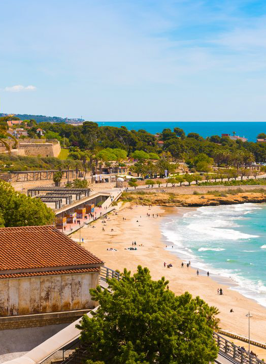

Gastronomía de Tarragona
Algunos de Platos Típicos
- Calçots
- Coca de Recapte
- Arrossejat
Descripción de los platos típicos
Mejores Restaurantes
- La Cuineta
-
El Llagut
- Uno de los restaurantes donde comer en Tarragona más recomendados
- Restaurante Racó de l’abat
¡Más información sobre los restaurantes!
| Restaurante | Descripción |
|---|---|
| La Cuineta | Cocina tradicional catalana | 25€-40€ |
| El Llagut | Marisoc y pesacado | 30€-50€ |
| Racó de l’abat | Cocina mediterránea | 20€-35€ |
Recursos Mutimedia sobre Tarragona
